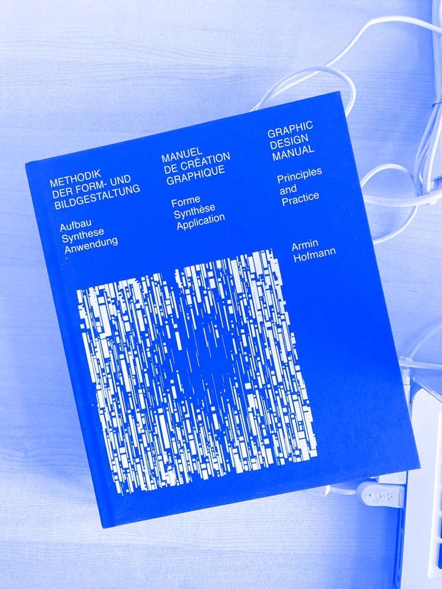

 
So! This project started a few months ago, under a tree, in a hot and windy day on a beautiful beach, Next to Bari, south of Italy. Actually, it’s not correct, to be precise, the Hofmann 1.0.0 project started there but the modules, and the structures were invented and thought quite long ago, much more in the north and in a much colder place, by the Swiss designer Armin Hoffmann. Hoffmann was and is a great inspiration for designers and artists all around the world and known for his artworks and especially for his experiments and teaching methodologies in the visual and graphic domain. About Hoffmann we could talk and talk for hours and days, through dots, lines, grids, compositions, contrast, exercises and study of variations and we could continue a long list of keywords but what makes it more understandable are his own words and his own visual works. Among the many visual exercises and studies Hofman did, a serie numbered 51, 52, and 53 from the book (scrivere titolo) became an obsession and a desire for playful experimentation and reflections until the creation of this platform. But coming back for one moment to Hoffman, why choose now to work on his experiments? And why exactly on the 51,52, and 53 among the many? This year is the 100 birthday of Hoffman and this project wants to be a homage to the designer and his teaching methodologies and experimentation but not only that. This platform allows you to try a system which was drawn and created by hand, which was meant to be done differently in different times. To be clear about it, it’s a project in which the visitor can observe and find new solution on Hoffmann’s grid system as an educative tool for everyone who is curious, who wants to understand it, just play with it or wants to break it, be disappointed by it. “we must accustom ourselves to the idea that our mental and vocational equipment must be constantly re-furbished ” The teaching metholodogies nu Hoffman are still valid like they where while he was teaching to his students with Emil Ruder at the Basel school of Design in the 70’s.